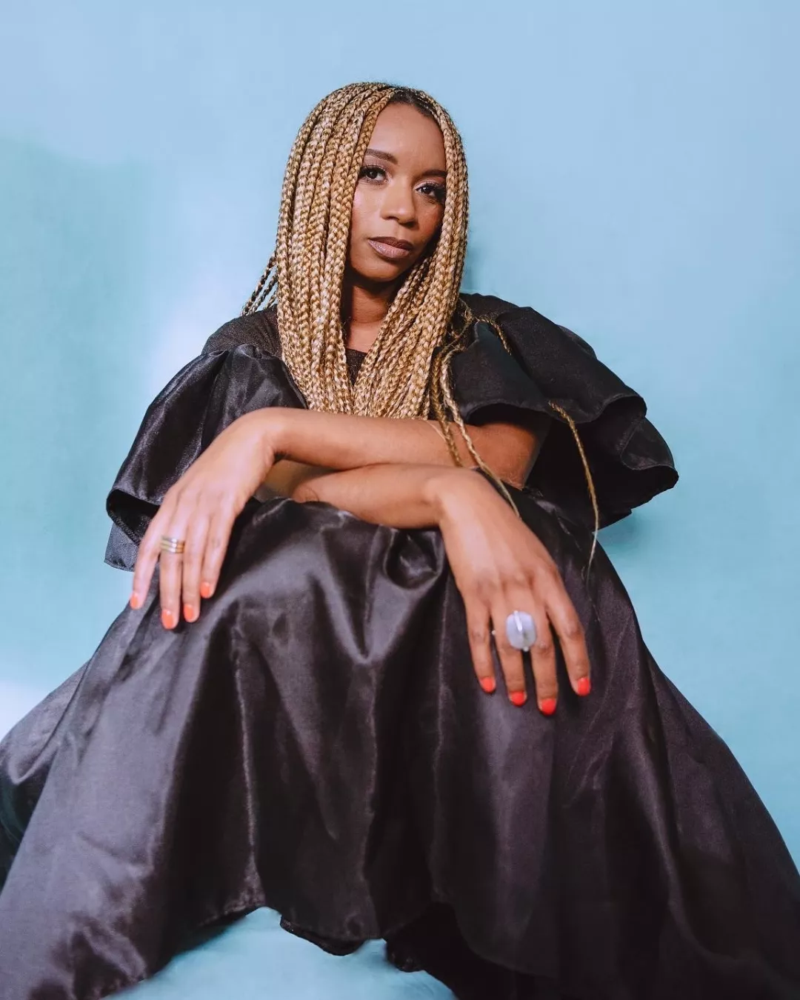

LinkedIn Top Voice
0
abonnés LinkedIn
3 publications par semaine depuis 6 ans · 20 000 impressions par semaine.
J'accompagne les dirigeants à structurer leur communication, asseoir leur influence et accélérer leur succès commercial.
En tant que stratège en marketing et communication, j'allie analyse terrain et vision prospective pour transformer les enjeux de votre marque.
Reconnue LinkedIn Top Voice, j'accompagne les dirigeants à structurer leur communication en proposant mes services de copywriter et de ghostwriter.
À travers le conseil et des missions opérationnelles, je donne à mes clients les clés pour asseoir leur influence de manière durable et accélérer le développement de leur marque.

As seen on
un écosystème d'influence construit pour les marques de mode et les solutions fashion tech. des opportunités de visibilité auprès de dirigeants dans la mode
LinkedIn Top Voice
0
abonnés LinkedIn
3 publications par semaine depuis 6 ans · 20 000 impressions par semaine.
Newsletter Créativité & Succès
0
taux d'ouverture
+1500 lecteurs dirigeants et membres de CODIR.
Podcast « Africa Fashion Tour »
0
interviews de créateurs
Premier média sur la mode africaine · + de 10 000 écoutes.
accompagner les dirigeants dans la mise en place de stratégies de croissance
Intervenante pour ESSEC · HEC Stand Up · KEDGE Business School · ESMOD · LISAA
Mélody,
Directrice Artistique« Avant de travailler avec Ramata, j'avais l'impression que mon expertise technique ne ressortait pas suffisamment sur les réseaux professionnels. Grâce à son accompagnement en Personal Branding, nous avons clarifié ma ligne éditoriale et structuré une prise de parole qui reflète enfin ma valeur ajoutée. Je n'aurais jamais soupçonné le potentiel de ma marque avant de faire ce travail avec elle. »
Gaëlle,
CEO marque de mode« Avant de travailler avec Ramata, il est facile de se retrouver dans l'opérationnel et d'oublier de valoriser la vision stratégique. Ramata m'a apporté ce cadre : une analyse fine du marché et de la concurrence, un repositionnement clair, un réagencement de nos lancements et de nos priorités. Travailler avec elle, c'est bénéficier d'une vraie direction marketing d'expérience. »
Entrepreneure,
Fashion Tech« Vulgariser une innovation auprès des décideurs du secteur et de ses codes était un vrai défi. L'accompagnement stratégique de Ramata a été déterminant pour traduire notre technologie en arguments métiers percutants. Grâce à sa double culture grande distribution et entrepreneuriat, nous avons construit un pitch commercial irréprochable et posé les fondations de notre stratégie Go-To-Market. »
Aux dirigeants, créatifs et indépendants qui souhaitent transformer leur savoir-faire en autorité sur LinkedIn et sur leur marché (Personal Branding & Ghostwriting).
Le Personal Branding travaille votre voix en tant que dirigeant, tandis que la mission de CMO Externalisé pilote la stratégie marketing globale de votre marque : positionnement, plateforme de marque, lancement de campagnes et pilotage des équipes.
Un atelier initial pour définir votre ligne éditoriale, un rythme mensuel de 2 à 3 publications, des points réguliers pour ajuster les priorités et une revue de performance chaque mois.
Nos formules d'accompagnement démarrent à partir de 1 500 € par mois pour le Personal Branding et jusqu'à 5 000 € par mois pour une délégation complète (Ghostwriting & Direction Éditoriale). Durée d'engagement flexible entre 3 et 12 mois selon vos objectifs.
Les deux ! Je travaille avec des dirigeants basés partout en France et à l'international. Les ateliers stratégiques peuvent se dérouler en présentiel à Paris ou en distanciel, selon vos préférences.
Ma Newsletter Créativité & Succès (+1500 dirigeants abonnés) et mon podcast Africa Fashion Tour proposent des formats de sponsoring — interviews, mentions, encarts — pour présenter vos solutions auprès d'une audience qualifiée de décideurs.